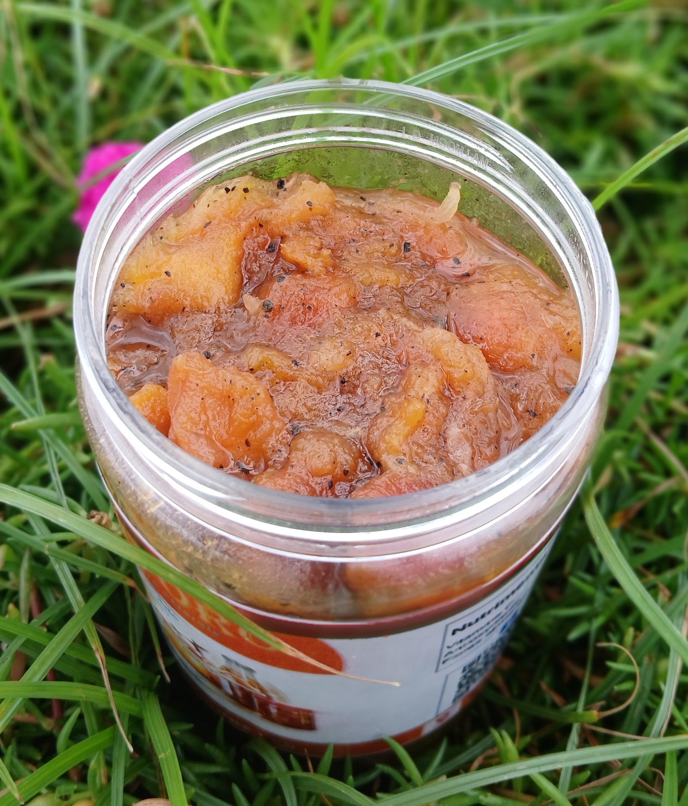

À propos du Projet
TSITORO est un projet entrepreneurial porté par SAYA, visant à transformer un fruit local souvent méconnu en produits modernes et commercialisables. Ce projet représente une initiative innovante de valorisation des richesses locales malgaches.
Objectifs Principaux
- Valorisation locale: Mettre en avant les ressources naturelles locales sous-utilisées
- Innovation produit: Développer des produits modernes et attractifs à partir d'une matière première traditionnelle
- Marque malagasy: Créer une identité de marque forte et reconnaissable au niveau national et international
- Durabilité: Promouvoir une approche durable et respectueuse de l'environnement
- Croissance économique: Générer de la valeur et des opportunités d'emploi pour les producteurs locaux
Stratégie de Développement
Approvisionnement
Partenariats directs avec les producteurs locaux pour garantir la qualité et la durabilité
Transformation
Développement de procédés modernes de transformation agroalimentaire
Design & Branding
Création d'une identité visuelle moderne et attractive
Commercialisation
Stratégie de distribution multi-canal (retail, e-commerce, B2B)
Phases du Projet
Phase 1: Recherche & Validation
Études de marché, sélection du fruit, test des procédés de transformation
2025 Q1-Q2Phase 2: Développement de Produits
Création de prototypes, test gustatif, ajustements de formule
2025 Q2-Q3Phase 3: Branding & Marketing
Création de l'identité visuelle, packaging, stratégie de communication
2025 Q3-Q4Phase 4: Lancement Commercial
Production à grande échelle, distribution, marketing de lancement
2026 Q1-Q2Résultats Attendus
Impact Social
Création d'emplois pour les producteurs et transformateurs locaux
Présence Marché
Distribution dans 50+ points de vente en 2026
Durabilité
Certifications écologiques et partenariats durables
Reconnaissance
Marque malgache leader dans sa catégorie
Mon Rôle
En tant que directeur du projet TSITORO, j'ai contribué à:
- Définir la vision et la stratégie globale du projet
- Piloter les études de marché et la sélection de la matière première
- Superviser le développement et les tests de produits
- Orchestrer la création de l'identité de marque
- Établir les partenariats clés avec les producteurs locaux
- Développer les stratégies de commercialisation et de distribution
- Gérer les équipes multidisciplinaires (R&D, marketing, opérations)